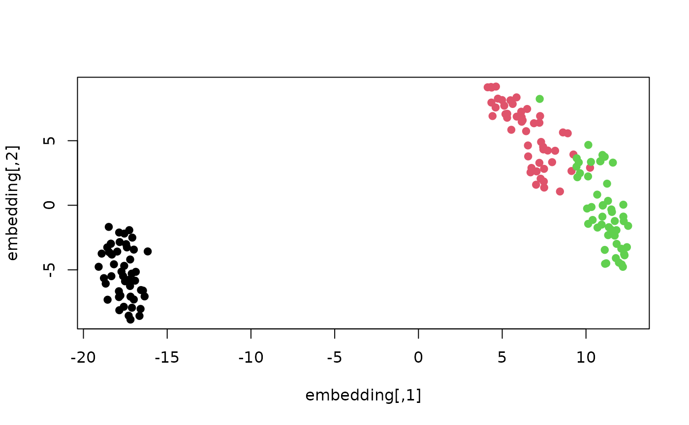

Carry out dimensionality reduction of a (small) dataset using one of a variety of neighbor embedding methods.
Usage
smallvis(
X,
k = 2,
scale = "absmax",
Y_init = "rand",
Y_init_sdev = NULL,
perplexity = 30,
max_iter = 1000,
pca = FALSE,
initial_dims = 50,
method = "tsne",
epoch_callback = TRUE,
epoch = max(1, base::round(max_iter/10)),
min_cost = 0,
tol = 1e-07,
g2tol = NULL,
momentum = 0.5,
final_momentum = 0.8,
mom_switch_iter = stop_lying_iter + 150,
eta = 500,
min_gain = 0.01,
opt = list("dbd"),
exaggeration_factor = 1,
stop_lying_iter = max(1, floor(max_iter/10)),
late_exaggeration_factor = 1,
start_late_lying_iter = max_iter - max(1, floor(max_iter/10)),
iter0_cost = FALSE,
ee_mon_epoch = NULL,
ee_mon_wait = 15,
ee_mon_buffer = 2,
tol_wait = 15,
ret_extra = FALSE,
n_threads = 0,
use_cpp = FALSE,
bh = FALSE,
theta = 0.5,
eps = .Machine$double.eps,
inp_kernel = NULL,
nn = NULL,
verbose = TRUE,
neighbors = NULL
)Arguments
- X
Input coordinates or distance matrix.
- k
Number of output dimensions for the embedding. Barnes-Hut and FFT t-SNE require
k = 2.- scale
If
TRUE, scale each column to zero mean and unit variance. Alternatively, you may specify one of the following strings:"range", which range scales the matrix elements between 0 and 1;"absmax", here the columns are mean centered and then the elements divided by absolute maximum value;"scale"does the same as usingTRUE. To use the input data as-is, useFALSE,NULLor"none". Normalizing an all-constant input produces an informative error.- Y_init
How to initialize the output coordinates. See the 'Output initialization' section.
- Y_init_sdev
If non-
NULL, scales each dimension of the initialized coordinates (including any user-supplied matrix) to this standard deviation. See 'Output initialization' section.- perplexity
The target perplexity for parameterizing the input probabilities. For method
"umap", controls the neighborhood size for parameterizing the smoothed k-nearest neighbor distances. With this kernel, values must be between 2 and the number of observations. One slot is reserved for self: the directed graph usesfloor(perplexity) - 1non-self neighbors before symmetrization. A fractional value retains its continuous calibration target. See also the 'Intrinsic dimensionality perplexity' and 'Multiscale perplexities' sections. Gaussian calibration requires each target to be finite and between 1 and the number of observations minus 1. Failed native calibrations use fallback affinities and report their count in a warning.- max_iter
Maximum number of iterations in the optimization.
- pca
If
TRUE, apply PCA to reduce the dimensionality ofXbefore any perplexity calibration, but after apply any scaling and filtering. The number of principal components to keep is specified byinitial_dims. You may alternatively set this value to"whiten", in which caseXis also whitened, i.e. the principal components are scaled by the inverse of the square root of the equivalent eigenvalues, so that the variance of component is 1.- initial_dims
If carrying out PCA or whitening, the number of principal components to keep. PCA runs when this is no greater than
min(nrow(X) - 1, ncol(X))after scaling and filtering. Otherwise input preprocessing is skipped.- method
A neighbor embedding method. See "Details" and "Method-specific options" for greater control. A string or a list starting with that string uses the same constructor and shared controls. Named options in the list override the corresponding top-level values. Constructor-specific defaults apply to other method options. A custom constructor function receives perplexity and any explicitly supplied shared controls present in its formals.
- epoch_callback
Function to call after each epoch. See the "Visualization callback" section. By default the current set of coordinates will be plotted. Set to
FALSEorNULLto turn this off.- epoch
After every
epochnumber of steps, calculates and displays the cost value and callsepoch_callback, if supplied.- min_cost
If the cost falls below this value, the optimization will stop early.
- tol
If the relative tolerance, averaged over the number of iterations between successive cost values calculations, falls below this value, the optimization will stop early. If there is another stage in the optimization to come then the next stage begins immediately. Otherwise, the optimization finishes. For
tol_waititerations after early exaggeration finished, early stopping will not occur.- g2tol
If the 2-norm (i.e the magnitude) of the gradient vector falls below this value, stop early. This is off by default and the
tolparameter is probably more reliable, but for some combinations of parameters, you may see the cost value plateauing and apparently the tolerance value falling belowtolbut termination not occurring: this means that the cost function is very slightly increasing. This is probably a numerical precision issue rather than divergence occuring, so in this case, use the gradient norm to stop early.- momentum
Initial momentum value.
- final_momentum
Final momentum value. If
late_exaggeration_factor > 1, then during late exaggeration, the momentum is switched back tomomentumfrom this value.- mom_switch_iter
Iteration at which the momentum will switch from
momentumtofinal_momentum. Ifexaggeration_factor > 1, then this should occur at some point afterstop_lying_iter(default is 150 iterations after). If the early exaggeration phase stops early, this value is treated as being relative to when early exaggeration stops, to avoid wasting iterations at the lower momentum value. For example, ifstop_lying_iter = 100andmom_switch_iter = 250(the defaults), but early exaggeration converges at iteration 50, the switch iteration will occur at iteration 150.- eta
Learning rate value, a positive number. Or set to
"optsne", to use the formula suggested by Belkina and co-workers (2018) in their opt-SNE package (the size of the dataset divided by theexaggeration_factor).- min_gain
Minimum gradient descent step size.
- opt
Optional list specifying alternative minimization method. See "Alternative optimizers" section.
- exaggeration_factor
Numerical value to multiply input probabilities by, during the early exaggeration phase. A value between 4-12 is normal. Usually un-necessary if not using
Y_init = "rand".- stop_lying_iter
Iteration at which early exaggeration is turned off.
- late_exaggeration_factor
Numerical value to multiply input probabilities by, during the late exaggeration phase (Linderman and co-workers, 2017). Smaller values than used with
exaggeration_factorseem better here (e.g. around 1.5-2).- start_late_lying_iter
Iteration at which to start late exaggeration (Linderman and co-workers, 2017). Applies
late_exaggeration_factorafter the specified iteration until the end of the optimization. Formax_iter = 1000,start_late_lying_iter = 900is suggested. If the main optimization stops early due to the convergence tolerance being reached, the late exaggeration stage will start immediately, for the same relative number of iterations, e.g. ifmax_iter = 1000andstart_late_lying_iter = 900, but the optimization converges at iteration 800, then late exaggeration will be started between iterations 801 and 900, so that you still only get 100 iterations of late exaggeration, rather than 200 (which is unlikely to be what you wanted).- iter0_cost
If
TRUE, calculate the cost for the initial configuration. This while be logged to the console ifverbose = TRUEor returned in theitercostsvector ifret_extra = TRUE.- ee_mon_epoch
If non-
NULL, then this is the number of iterations between epochs during early exaggeration, and which overrides the value provided byepoch. In this mode, the early exaggeration monitoring of the average relative rate of change in the cost as used in the opt-SNE method (Belkina and co-workers, 2018) is used and thetolparameter is ignored.- ee_mon_wait
If
ee_mon_epochis non-NULL, then wait this number of iterations before monitoring the relative rate of change of the cost function during early exaggeration.- ee_mon_buffer
If
ee_mon_epochis non-NULL, then ignore this number of occurences of the relative rate of change of the cost function decreasing, which would otherwise signal termination of the early exaggeration stage. This is to prevent erroneous termination of early exaggeration under conditions when the cost can fluctuate noisily.- tol_wait
Wait this number of iterations during standard optimization (i.e. after early exaggeration, if any), before applying the relative tolerance early stopping criterion controlled by
tol.- ret_extra
If
TRUE, return value is a list containing additional values associated with the embedding; otherwise just the output coordinates. You may also provide a vector of names of potentially large or expensive-to-calculate values to return, which will be returned in addition to those value which are returned when this value isTRUE. See theValuesection for details.- n_threads
Number of threads to use in multi-threaded code. Default is 0, which means no multi-threading. Mainly affects the calculation of things like distance matrices and perplexity calibration if you set
use_cpp = TRUE. The thread count also applies to neighbor search, Barnes-Hut forces, and FFT t-SNE attraction.- use_cpp
If
TRUEuse multi-threaded C++ code for some calculations. Default isFALSE. This won't speed up all steps and you will want to use this in conjunction withn_threads. The specialized gradient and Student-weight kernels require two output dimensions. Other dimensions use the general R calculations for those steps.- bh
If
TRUE, approximate repulsive interactions with Barnes-Hut (van der Maaten, 2014). Available for"tsne","ssne","hssne","dhssne","snerv","tee","largevis","umap","tumap","jssne","hlsne", and"chsne"in two dimensions. SSNE, HSSNE, dynamic HSSNE, SNeRV, TEE, LargeVis, t-UMAP, Jensen-Shannon SNE, Hellinger SNE, and chi-squared SNE useinp_kernel = "nngaussian"by default and also accept"knn". For UMAP, the input kernel is"skd"(smooth kNN affinities). t-UMAP also accepts"skd". These modes use approximate neighbor search by default. Usenn = "exact"for exact neighbor lookup.- theta
Barnes-Hut opening threshold, default
0.5. Smaller values open more cells. Zero evaluates the repulsive sum exactly for the chosen input affinities. Applies withbh = TRUEormethod = list("tsne", repulsion = "bh").- eps
Set epsilon for avoiding division-by-zero errors. Default is
.Machine$double.eps, but if you see inconsistent convergence results with optimizer that should be reducing the cost each iteration, then try setting this to a larger value, e.g. between1e-3 - 1e-9. For Barnes-Hut and FFT t-SNE, epsilon is added to the sum of non-self Student weights in both the cost and gradient. The Barnes-Hut tree uses only the coordinates. When floating-point precision limits subdivision, a terminal leaf stores distinct coordinates as separate groups. Barnes-Hut SSNE uses unfloored Gaussian output affinities and ignoreseps. Barnes-Hut SNeRV uses a positiveepsto floor the input affinities and leaves the output affinities unfloored. Barnes-Hut UMAP, t-UMAP, and Jensen-Shannon SNE require a positive epsilon.- inp_kernel
For t-SNE-like methods, determines how the input similarities are calculated. Possible values are:
"gaussian"Gaussian kernel using the targetperplexity."nngaussian"Gaussian kernel using the targetperplexitybut similarities beyond the nearest neighbors of each observation are set to zero. The number of nearest neighbors is three times theperplexity. For large datasets, this is faster than"gaussian", with only a negligible loss of accuracy."knn"
k-nearest neighbors kernel. Only the
perplexitynearest neighbors of each observation are considered and each are given a similarity of1/perplexity. This can be a lot faster than using"nngaussian"as fewer neighbors need to be found.- nn
Method for finding neighbors for t-SNE and Barnes-Hut neighbor input kernels. Possible values are:
"exact"Exact nearest neighbors."approximate"Approximate nearest neighbors.
Approximate nearest neighbors are faster for large datasets and usually the small loss in accuracy is not a problem. The default is
NULL, where each method gets to choose the best method for its needs. Precomputed distance inputs use exact neighbor lookup.- verbose
If
TRUE, log progress messages to the console.- neighbors
Optional list of precomputed nearest neighbors for methods using the
"knn","nngaussian", or"skd"input kernel. Supply equally sized matricesidx(one-based row indices) anddist(finite, nonnegative, unsquared distances). Match the row order ofXand list non-self neighbors in distance order, with no duplicate indices. A self entry is optional and is skipped. Leavennunset. Supply a single numeric perplexity (a whole number for"knn"). Each row needsperplexitynon-self neighbors for"knn", orfloor(3 * perplexity)for"nngaussian", capped at the number of other observations. For"skd", the neighborhood size includes self, so each row needsfloor(perplexity) - 1non-self neighbors. The supplied graph defines the input affinities regardless of scaling or PCA.
Value
If ret_extra is FALSE, the embedded output coordinates
as a matrix. Otherwise, a list with the following items:
YMatrix containing the embedded output coordinates.NNumber of objects.origDDimensionality of the input data.scaleScaling applied to input data, as specified by thescaleparameter.Y_initInitialization type of the output coordinates, as specified by theY_initparameter, or if a matrix was used, this will contain the string"matrix".iterNumber of iterations the optimization carried out.time_secsTime taken for the embedding, in seconds.perplexityTarget perplexity of the input probabilities, as specified by theperplexityparameter.costsContributions to the objective evaluated at the returned coordinates, after removing exaggeration. Their sum is the final objective. ASNE and its bandwidth variants report one conditional KL divergence per row. Other dense methods generally group pairwise terms by column. Barnes-Hut and FFT methods return a single scalar objective.itercostsObjective values recorded at epochs. This history can be empty if an optimizer stops before the first epoch. Values recorded during exaggeration need not match the final unexaggerated objective.optList containing optimization parameters. For the default delta-bar-delta method,mom_switch_iter,momentum,final_momentumandeta. Otherwise, the contents of theoptparameter argument.exaggeration_factorMultiplier of the input probabilities during the early exaggeration phase.stop_lying_iterIteration at which early exaggeration is stopped, as specified by thestop_lying_iterparameter.late_exaggeration_factorMultiplier of the input probabilities during the late exaggeration phase.stop_late_lying_iterIteration at which late exaggeration is stopped, as specified by thestop_late_lying_iterparameter.pca_dimsIf PCA was carried out to reduce the initial dimensionality of the input, the number of components retained, as specified by theinitial_dimsparameter.whiten_dimsIf PCA whitening was carried out to reduce the dimensionality of the input, the number of components retained, as specified by theinitial_dimsparameter.G2normThe 2-norm of the gradient on the final iteration. A rough measure of convergence.
Additionally, if you set ret_extra to a vector of names, these will
be returned in addition to the values given above. These values are optional
and must be explicitly asked for, because they are either expensive to
calculate, take up a lot of memory, or both. The available optional values
are:
XThe input data, after filtering and scaling.PThe input probabilities.QThe output probabilities.DXInput distance matrix. The same asXwhen the input data is already a distance matrix.DYOutput coordinate distance matrix.
The following additional optional values are available only if the SNE-style perplexity calibration was used as part of the embedding method:
VInput affinities (un-normalized weights used to generateP).betaPrecisions (inverse standard deviation) of the input kernel functions. Only available if the gaussian kernel was used.dintIntrinsic dimensionalities associated with the input affinities. Only available if the gaussian kernel was used.adeginIn-degree (column sums) from the un-normalized, un-symmetrized affinity matrix.adegoutOut-degree (row sums) from the un-normalized, un-symmetrized affinity matrix.adegcDegree centrality (average of in-degree and out-degree) from the un-normalized, un-symmetrized affinity matrix.pdegDegree values from the probability matrix. This is always the column sums of the P matrix: For row-normalized P matrices, rows sum to one, so aren't informative and for symmetrized P matrices, the column sum and row sums are identical.
Details
Currently supported embedding methods, which can be used as an argument
to the method parameter are:
"tsne"t-Distributed Stochastic Neighbor Embedding (van der Maaten and Hinton, 2008).Barnes-Hut t-SNE (van der Maaten, 2014), selected with
method = "tsne", bh = TRUE.FFT t-SNE (Linderman et al., 2019), selected with
method = list("tsne", repulsion = "fft")."largevis"the cost function of the LargeVis algorithm (Tang et al, 2016). Input affinities are calculated and symmetrized using the same perplexity calibration method as t-SNE. Usenormalize = FALSEto leave them unnormalized."umap"the cost function the UMAP method (McInnes, 2017). UMAP uses unnormalized input weights, which are calibrated via smoothed k-nearest-neighbor distances, rather than perplexity (the procedure is similar, however). The value of k is controlled by theperplexityparameter."tumap"Like UMAP, except the output weight function is the t-distribution with one degree of freedom, like t-SNE and LargeVis. This simplifies the gradient calculation compared to UMAP, so it runs faster."mmds"Metric Multidimensional Scaling (Borg and Groenen, 2005), which reduces the "strain", i.e. the square loss between the input and output distances."gmmds"Replaces the input Euclidean distances in"mmds"with geodesic distances calculated using k-nearest-neighbors, in the style of ISOMAP (Tenenbaum and co-workers, 2000). The value of k is set by theperplexityparameter or method optionk. It counts non-self neighbors and may be any integer from 1 to the number of observations minus 1. The graph includes an undirected edge when either observation selects the other. Tied neighbor identities may differ between coordinate and distance input."asne"The original asymmetric Stochastic Neighbor Embedding method of Roweis and Hinton (2002)."ssne"The symmetric SNE method of Cook and co-workers (2007)."hssne"The heavy-tailed symmetric SNE method of Yang and co-workers (2009)."wtsne"The weighted t-SNE Method of Yang and co-workers (2014). The importance matrix used is the degree centrality (column sums) of the normalized input weight matrix."ee"The Elastic Embedding method of Carreira-Perpinan (2010)."tee"A t-distributed version of Elastic Embedding (see the documentation at https://jlmelville.github.io/smallvis/tee.html for a description)."nerv"The Neighbor Retrieval Visualizer method of Venna and co-workers (2010). This version differs from the presentation in Venna and co-workers (2010), in that it does not use the precision values determined from the perplexity calibration in the output kernel functon, which seems to reflect its presentation in later publications, see e.g. Yang and co-workers (2014). If you really want the version from Venna and co-workers, use method"bnerv"."snerv"Symmetric NeRV with globally normalized Gaussian output affinities."jse"The Jensen-Shannon Embedding method of Lee and co-workers (2013)."absne"The alpha-beta SNE method of Narayan and co-workers (2015)."chsne"The chi-squared divergence version of t-SNE (Im and co-workers, 2018)."hlsne"The Hellinger distance divergence version of t-SNE (Im and co-workers, 2018)."rklsne"The reverse Kullback-Leibler divergence version of t-SNE (Im and co-workers, 2018)."jssne"The Jensen-Shannon divergence version of t-SNE (Im and co-workers, 2018)."gsne", The global SNE (g-SNE) method of Zhou and Sharpee (2018).
By default, these methods use dense input affinities and gradients.
For t-SNE, SSNE, HSSNE, dynamic HSSNE, SNeRV, TEE, LargeVis, UMAP, t-UMAP,
Jensen-Shannon SNE, Hellinger SNE, and chi-squared SNE, bh = TRUE
approximates repulsive interactions.
Neighbor input kernels can use approximate neighbor search.
Method-specific options
Some of these methods require the use of extra parameters. To avoid
cluttering up the smallvis function interface, default values are
used. To control these, instead of passing a name to the method
parameter, pass a list. The first element is the name of the method you wish
to use. Subsequent elements must be named values specifying the parameters.
Some parameters are available for all (nor nearly all) methods.
inp_kernelthe input kernel function. Can be one of:"gauss"(the default),"exp"or"knn"."exp"uses unsquared distances to calculate similarities and is not the usual literature function, but matches the implementation in the tsne package (and probably doesn't matter very much)."knn"uses the symmetric k-nearest neighbors graph with element (i, j) being set to one if i is one of j's k-nearest neighbors or vice versa. Other elements are set to zero. Note that no sparsification is carried out with this kernel, so there are no memory or performance improvements to be had with this setting."skd"uses the smooth knn distances method as used by UMAP.symmetrizethe type of symmetrization, used by symmetric methods only. Can be one of:"symmetric"symmetric nearest neighbor style, by arithmetic averaging, as in t-SNE."fuzzy"symmetrization by fuzzy set union as used in UMAP."mutual"mutual nearest neighbor style as suggested by Schubert and Gertz (2017).
"LargeVis"gammaWeighting term for the repulsive versus attractive forces. Default is1. The implementation by the creators of LargeVis uses a defaultgamma = 7, but note that this is for stochastic gradient descent with limited sampling of the repulsive contributions so it's unlikely to be a good choice with the implementation used in this package.gr_epsEpsilon used in the gradient to prevent division by zero. Default is0.1.
"UMAP"gr_epsEpsilon used in the gradient to prevent division by zero. Default is0.1.spreadParameter controlling the output kernel function. Controls the length over which the output kernel decays from 1 to 0. Default is1.min_distParameter controlling the output kernel function. According to the UMAP documentation, controls "how tightly the embedding is allowed compress points together. Larger values ensure embedded points are more evenly distributed, while smaller values allow the algorithm to optimise more accurately with regard to local structure. Sensible values are in the range 0.001 to 0.5". Default is0.001.
"tUMAP"gr_epsEpsilon used in the gradient to prevent division by zero. Default is0.1.
"HSSNE"alphaHeavy-tailedness parameter, a positive numeric scalar. Increasing this value increases the amount of stretching that occurs in the output weighting function. A value of 0 performs like method"SSNE", and a value of 1 performs like method"TSNE". Default is0.5.
"EE"lambdaWeighting term for the repulsive versus attractive forces. Default is100.
"tEE"lambdaFinite positive repulsion weight. Default is0.01. The cost is the I-divergence from the input weights tolambdatimes the output weights, divided by the sum of the input weights.
"NeRV"lambdaWeighting term for relative cost of false positive versus false negatives (in terms of output distances). Should be a value between 0 and 1. Setting to 1 performs like method"ASNE". Default is0.9based on work in Yang and co-workers (2015).
"SNeRV"lambdaWeight on the forward KL term, between 0 and 1. Default is0.9.
"JSE"kappaWeighting term for the combination of KL divergences used in the JSE cost function. Should be a value between 0 and 1. Setting to 0 performs like method"ASNE". Setting to 1 performs like method"NeRV"with itslambdaparameter set to0. Yes, that's confusing. The default is0.5.
"ABSNE"alphaAlpha value for the alpha-beta divergence. Setalpha < 1to produce more smaller, finer-grained clusters, andalpha > 1to produce fewer, larger clusters, with more emphasis on global structure. Default is1.0, to give t-SNE-like behavior.lambdaSum of alpha + beta, where beta is the beta value for the alpha-beta divergence. Setlambda < 1to increase cluster separation, andlambda > 1to decrease cluster separation. Default is1.0, to give t-SNE-like behavior.
"gsne"lambdaWeighting factor to put increasing emphasis on preserving global similarities. Set to0to get t-SNE (no extra emphasis on global structure), and to1.0to get equal weighting between the local and global divergences. Default is1.0.
The examples demonstrate how to use method with these optional
parameters.
t-SNE repulsion
Use method = list("tsne", repulsion = ...) to select "exact"
(the default all-pairs calculation), "bh" (Barnes-Hut), or
"fft" (FFT interpolation). bh = TRUE also selects Barnes-Hut
and conflicts with an explicit choice of exact or FFT repulsion.
theta applies to Barnes-Hut, where zero evaluates the repulsive
sum exactly for the chosen input affinities.
Repulsion controls the output calculation. Use inp_kernel and
neighbors to control the input affinities. Exact t-SNE defaults to
"gaussian". Barnes-Hut and FFT default to "nngaussian" and
approximate neighbor search. FFT also accepts "knn". Compare the
three repulsion methods on the same input affinities by setting
inp_kernel and supplying the same neighbors to each.
FFT requires two output dimensions and a gradient-only optimizer such as
the default "dbd". It reports an approximate scalar objective.
FFT attraction runs in native code and uses n_threads.
The following options go in the method list:
fft_backend"stats"(default) usesfft."fftwtools"uses the optional fftwtools package.grid_intervalA finite positive target grid cell width in embedding units, default 1. There are three interpolation nodes per axis in each cell and at least 50 cells per axis. Increasing the interval can reduce grid work at the cost of accuracy. The fit stops before allocating a padded grid larger than four million cells.
Output initialization
For initializing the output coordinates, set the Y_init parameter
to one of the following:
A matrix: which must have dimensions
nbyk, wherenis the number of rows inX."rand": initialize from a Gaussian distribution with mean 0 and standard deviation 1e-4, the default used by t-SNE. The standard deviation can be controlled withY_init_sdev(see below)."pca": use the firstkscores of the PCA: columns are centered, but no scaling beyond that which is applied by thescaleparameter is carried out."spca": uses the PCA scores and then scales each score to a standard deviation of 1e-4, similar to the method advocated by Kobak and Berens, 2018. The standard deviation can be controlled withY_init_sdev(see below)."laplacian": initialize from Laplacian Eigenmap (Belkin and Niyogi, 2002). The affinity matrix used as input is the result of the perplexity or smoothed k-nearest neighbor distance calibration. Either normalized or un-normalized input data will be used, with un-normalized values used if both are available (although this shouldn't make a difference). This initialization method cannot be used if the chosen embeddingmethoddoes not calculate a suitable input matrix. If the input matrix is present but isn't symmetric (e.g.methodchoices such as"jse","nerv"and"asne") then the initialization will proceed, but the results may not be reliable. If the RSpectra package is available, this will be used, otherwise theeigenfunction is used, which is much slower. Using RSpectra is highly recommended."normlaplacian": initialize from the eigenvectors of the normalized Laplacian. This is a similar procedure to using Laplacian Eigenmaps, but with a slightly different Laplacian and is the same initialization procedure as carried out by UMAP (as of version 0.2.1). The same limitations apply as forY_init = "laplacian", including the recommendation to install the RSpectra package.
As spectral methods, using "laplacian" or "normlaplacian" is
similar to turning off the repulsive interactions in many cost functions
related to t-SNE (see Carreira-Perpinan, 2010, and Linderman and
Steinerberger, 2017): it may therefore unnecessary to use the
exaggeration_factor setting.
The Y_init_sdev parameter, if provided, will scale the input
coordinates such that the standard deviation of each dimension is the
provided value. The default is to do no scaling, except for
Y_init = "spca" and Y_init = "rand" where a scaling to a
standard deviation of 1e-4 is used, as in t-SNE initialization.
Y_init = "spca" is effectively an alias for Y_init = "pca",
Y_init_sdev = 1e-4.
Depending on the embedding method, a particular initialization method may
result in initial coordinates with too small or large inter-point distances,
which can result in too large or small gradients, respectively. In turn this
will lead to difficulties in optimization. Shrinking the initial embedding by
rescaling can help under these circumstances. Y_init= "spca" is a
good default place to start.
Visualization callback
During the optimization, the vizier package
(https://www.github.com/jlmelville/vizier) is used for visualization.
To use a custom callback, provide to the epoch_callback parameter a
function with the following signature:
function(Y, iter, cost = NULL)
where Y is the matrix of coordinates, iter is the current
iteration and cost is the current error value, which will be
NULL the first time this function is called (at iteration 0).
The function should have no return value, and presumably will call a plot
function. See the "Examples" section for the use of a custom callback.
Explicitly set epoch_callback to NULL or FALSE to turn
this off.
Intrinsic dimensionality perplexity
Instead of using a numeric value for the perplexity argument, you may
also set this argument to "idp" (Intrinsic Dimensionality Perplexity),
and the perplexity associated with the estimate of the intrinsic
dimensionality of the dataset will be used. This method is only available for
methods that use the Gaussian input kernel. To find the IDP, candidate values
of perplexities in increasing powers of 2 up to 128 are used by default. To
use a custom set of perplexities, provide a list to the perplexity
argument, with the first item being "idp" and the second item being a
vector of perplexities, e.g. perplexity = "idp" for default behavior
or perplexity = list("idp", c(10, 20, 30)) to use the perplexity out
of 10, 20, 30 that estimates the intrinsic dimensionality the best.
Perplexities are evaluated in the order provided, and the search will
terminate early if the estimate of intrinsic dimensionality is judged to be
getting worse. It is recommended to provide the candidate perplexities in
increasing order. For more details on IDP, see
https://jlmelville.github.io/smallvis/idp.html.
Multiscale perplexities
Another technique to combine multiple perplexities is to use the multiscale
approach given by de Bodt and co-workers (2018). As with IDP, a series of
candidate perplexities are used, but all the affinity matrices are used to
create an average matrix which is used as the final probability matrix.
To use this method, set perplexity = "multiscale". Default and custom
list of perplexities to use can be provided in the same way as with IDP.
Weighted t-SNE and SSNE use degree centralities of the averaged probability
matrix. The unnormalized t-SNE variants "tsneu" and "pstsne"
use its symmetric affinities scaled by the number of observations.
A multiscale mixture has no single calibrated input bandwidth. The methods
"btsne", "bssne", "basne", and "btasne"
therefore require an explicit method option beta with multiscale
perplexities. Method "bnerv" requires automatic bandwidth transfer
and does not support multiscale perplexities.
Note that previous work by this group described a slightly more complex
approach where the number of individual perplexity results are introduced
into the average sequentially over the course of the optimization, and
the output probabilities are also generated by an averaging. Although also
referred to as "multiscale", these variations are not implemented. Also,
extra data associated with a specific perplexity (e.g. input bandwidths, raw
affinity degree centralities, intrinsic dimensionality) will not be returned.
Degree centrality of the averaged P matrix is available as "pdeg".
Alternative optimizers
Instead of the delta-bar-deta optimizer used in t-SNE, other optimizers can
be used, by passing a list to the opt parameter. The first item
is the name of the optimizer. Subsequent items should be named values of
the parameters specific to that optimizer. Optimizer and their parameters
are as follows:
"adagrad"Adagrad.etaInitial learning rate.epsEpsilon.
"adadelta"Adadelta.rhoMomentum-like term.epsEpsilon.
"rmsprop"RMSProp.etaInitial learning rate.rhoMomentum-like term.epsEpsilon.
"ndbd"Delta-bar-delta with Nesterov momentum.etaInitial learning rate.momentumMomentum before iteration given bymom_switch_iter.final_momentumMomentum after iteration given bymom_switch_iter.mom_switch_iterSwitch frommomentumtofinal_momentumat this iteration.min_gainMinimum step size.
Arguments to
smallvisthat apply to the default delta-bar-delta optimizer can also be used to set these arguments."adam"Adam.etaInitial learning rate.beta1Momentum-like term.beta2Momentum-like term for variance decay.epsEpsilon.
"adamax"Adamax.etaInitial learning rate.beta1Momentum-like term.beta2Momentum-like term for variance decay.epsEpsilon.
"nadam"Adam with Nesterov momentum.etaInitial learning rate.beta1Momentum-like term.beta2Momentum-like term for variance decay.epsEpsilon.
"steepd"Steepest descent with fixed step size.etaStep size.
"mom"Classical momentum with fixed step size.etaStep size.muMomentum.
Note that the majority of these are intended for use in stochastic gradient
descent for deep learning. For method = "tsne", you probably are better
to stick with the default delta-bar-delta method. For other methods, one of
these methods may provide greater stability.
Alternatively, optimization methods from the mize package, https://cran.r-project.org/package=mize, can also be used, with the same format: provide the name of the optimizer as the first element of the list, followed by named pairs of arguments. Some possible settings are:
"BFGS"The Broyden-Fletcher-Goldfarb-Shanno quasi-Newton method. Best used with small datasets."L-BFGS"The limited-memory BFGS, a good default choice if the standard delta-bar-delta optimizer fails to converge."SPECD"A non-sparse version of the spectral direction method of Vladymyrov and Carreira-Perpinan (2012). Suitable only for methods which generate a normalized input affinity matrix (like t-SNE). Due to its non-sparse forumulation, this is even more time-consuming to use than BFGS in its current state.
Because these optimizers can carry out multiple gradient and function
evaluations per iteration (compared to the default which only calculates
one gradient calculation), you may wish to set the "step_tol"
(minimum step size) and/or "max_gr" (maximum number of gradient
evaluation) settings in the list to keep the number of calculations these
optimization methods use comparable to the default settings.
Function-based optimizers require a matching objective and gradient.
For UMAP, t-UMAP, LargeVis, and USNE, set method option gr_eps = 0;
their default stabilized forces require a gradient-only optimizer. Early
and late exaggeration also require a gradient-only optimizer.
Pseudo-separable t-SNE ("pstsne") requires a gradient-only optimizer
because its approximate forces do not differentiate its reported objective.
Dynamic HSSNE ("dhssne") also requires a gradient-only optimizer:
alpha changes invalidate the objective data retained by function-based
optimizers between steps. Use "hssne" for fixed-alpha line searches.
With gr_eps = 0, USNE assigns zero force to coincident pairs only
when its fitted kernel exponent b > 0.5; otherwise the kernel is
not differentiable at coincidence and an error is reported.
See the examples for the use of alternative optimizers interface. For best
results, you may also consider using the smallvis_perpstep
function with these optimizers.
References
Linderman, G. C., Rachh, M., Hoskins, J. G., Steinerberger, S., & Kluger, Y. (2019). Fast interpolation-based t-SNE for improved visualization of single-cell RNA-seq data. Nature Methods, 16, 243–245. doi:10.1038/s41592-018-0308-4
Belkin, M., & Niyogi, P. (2002). Laplacian eigenmaps and spectral techniques for embedding and clustering. In Advances in neural information processing systems (pp. 585-591). http://papers.nips.cc/paper/1961-laplacian-eigenmaps-and-spectral-techniques-for-embedding-and-clustering.pdf
Belkina, A. C., Ciccolella, C. O., Anno, R., Spidlen, J., Halpert, R., & Snyder-Cappione, J. (2018). Automated optimal parameters for T-distributed stochastic neighbor embedding improve visualization and allow analysis of large datasets. bioRxiv, 451690. https://www.biorxiv.org/content/10.1101/451690v2.abstract
De Bodt, C., Mulders, D., Verleysen, M., & Lee, J. A. (2018). Perplexity-free t-SNE and twice Student tt-SNE. In European Symposium on Artificial Neural Networks, Computational Intelligence and Machine Learning (ESANN 2018) (pp. 123-128). http://hdl.handle.net/2078.1/200844
Borg, I., & Groenen, P. J. (2005). Modern multidimensional scaling: Theory and applications. Springer Science & Business Media.
Carreira-Perpinan, M. A. (2010, June). The Elastic Embedding Algorithm for Dimensionality Reduction. In Proceedings of the 27th International Conference on Machine Learning (ICML-10) (pp. 167-174).
Cook, J., Sutskever, I., Mnih, A., & Hinton, G. E. (2007). Visualizing similarity data with a mixture of maps. In International Conference on Artificial Intelligence and Statistics (pp. 67-74).
Hinton, G. E., & Roweis, S. T. (2002). Stochastic neighbor embedding. In Advances in neural information processing systems (pp. 833-840).
Im, D. J., Verma, N., & Branson, K. (2018). Stochastic Neighbor Embedding under f-divergences. arXiv preprint arXiv:1811.01247. https://arxiv.org/abs/1811.01247
Kobak, D., & Berens, P. (2018). The art of using t-SNE for single-cell transcriptomics. bioRxiv, 453449. https://doi.org/10.1101/453449
Lee, J. A., Renard, E., Bernard, G., Dupont, P., & Verleysen, M. (2013). Type 1 and 2 mixtures of Kullback-Leibler divergences as cost functions in dimensionality reduction based on similarity preservation. Neurocomputing, 112, 92-108.
Linderman, G. C., & Steinerberger, S. (2017). Clustering with t-SNE, provably. arXiv preprint arXiv:1706.02582. https://arxiv.org/abs/1706.02582
Linderman, G. C., Rachh, M., Hoskins, J. G., Steinerberger, S., & Kluger, Y. (2017). Efficient Algorithms for t-distributed Stochastic Neighborhood Embedding. arXiv preprint arXiv:1712.09005. https://arxiv.org/abs/1712.09005
McInnes, L., & Healey, J. (2018). UMAP: Uniform Manifold Approximation and Projection for Dimension Reduction arXiv preprint arXiv:1802.03426. https://arxiv.org/abs/1802.03426
Narayan, K. S., Punjani, A., & Abbeel, P. (2015, June). Alpha-Beta Divergences Discover Micro and Macro Structures in Data. In Proceedings of the 32nd International Conference on Machine Learning (ICML-14) (pp 796-804). http://proceedings.mlr.press/v37/narayan15.html
Schubert, E., & Gertz, M. (2017, October). Intrinsic t-stochastic neighbor embedding for visualization and outlier detection. In International Conference on Similarity Search and Applications (pp. 188-203). Springer, Cham. https://doi.org/10.1007/978-3-319-68474-1_13
Tang, J., Liu, J., Zhang, M., & Mei, Q. (2016, April). Visualizing large-scale and high-dimensional data. In Proceedings of the 25th International Conference on World Wide Web (pp. 287-297). International World Wide Web Conferences Steering Committee. https://arxiv.org/abs/1602.00370
Tenenbaum, J. B., De Silva, V., & Langford, J. C. (2000). A global geometric framework for nonlinear dimensionality reduction. Science, 290(5500), 2319-2323. https://dx.doi.org/10.1126/science.290.5500.2319
Van der Maaten, L., & Hinton, G. (2008). Visualizing data using t-SNE. Journal of Machine Learning Research, 9 (2579-2605). http://www.jmlr.org/papers/v9/vandermaaten08a.html
Van der Maaten, L. (2014). Accelerating t-SNE using tree-based algorithms. Journal of Machine Learning Research, 15(1) (3221-3245). https://jmlr.org/papers/v15/vandermaaten14a.html
Venna, J., Peltonen, J., Nybo, K., Aidos, H., & Kaski, S. (2010). Information retrieval perspective to nonlinear dimensionality reduction for data visualization. Journal of Machine Learning Research, 11, 451-490.
Vladymyrov, M., & Carreira-Perpinan, M. A. (2012). Partial-Hessian Strategies for Fast Learning of Nonlinear Embeddings. In Proceedings of the 29th International Conference on Machine Learning (ICML-12) (pp. 345-352).
Yang, Z., King, I., Xu, Z., & Oja, E. (2009). Heavy-tailed symmetric stochastic neighbor embedding. In Advances in neural information processing systems (pp. 2169-2177).
Yang, Z., Peltonen, J., & Kaski, S. (2014). Optimization equivalence of divergences improves neighbor embedding. In Proceedings of the 31st International Conference on Machine Learning (ICML-14) (pp. 460-468).
Yang, Z., Peltonen, J., & Kaski, S. (2015). Majorization-Minimization for Manifold Embedding. In Proceedings of the 18th International Conference on Artificial Intelligence and Statistics (AISTATS 2015) (pp. 1088-1097).
Zhou, Y., & Sharpee, T. (2018). Using global t-SNE to preserve inter-cluster data structure. bioRxiv, 331611. https://doi.org/10.1101/331611
Examples
embedding <- smallvis(
iris, Y_init = "spca", perplexity = 30, max_iter = 250,
epoch_callback = FALSE, n_threads = 1, verbose = FALSE
)
plot(embedding, col = as.integer(iris$Species), pch = 19)

if (FALSE) { # \dontrun{
# tsne is the default. verbose = TRUE logs progress to console
# Also automatically uses github vizier package for plotting coordinates
# during optimization
tsne_iris <- smallvis(iris, perplexity = 50, verbose = TRUE)
# Can use a custom epoch_callback for visualization
colors = grDevices::rainbow(length(unique(iris$Species)))
names(colors) = unique(iris$Species)
ecb = function(x, y) {
plot(x, t = 'n')
text(x, labels = iris$Species, col = colors[iris$Species])
}
tsne_iris <- smallvis(iris, epoch_callback = ecb, perplexity = 50, verbose = TRUE)
# To turn off visualization entirely:
tsne_iris <- smallvis(iris, epoch_callback = FALSE, perplexity = 50, verbose = TRUE)
# Try the LargeVis cost function, using its default parameters:
largevis_iris <- smallvis(iris, method = "largevis", epoch_callback = ecb,
perplexity = 50, verbose = TRUE)
# Use a list with the method parameter for more control over LargeVis
largevis_iris <- smallvis(iris, method = list("largevis", gamma = 1),
epoch_callback = ecb, perplexity = 50, verbose = TRUE)
# Use the UMAP cost function and input weights (perplexity here refers to the
# smoothed number of nearest neighbors)
umap_iris <- smallvis(iris, method = "umap", eta = 0.1,
epoch_callback = ecb, perplexity = 50, verbose = TRUE)
# Can also control extra UMAP parameters via a list
umap_iris <- smallvis(iris, method = list("umap", lv_eps = 0.01), eta = 0.01,
epoch_callback = ecb, perplexity = 50, verbose = TRUE)
# Make embedding deterministic by initializing with scaled PCA scores
tsne_iris_spca <- smallvis(iris, epoch_callback = ecb, perplexity = 50, Y_init = "spca",
exaggeration_factor = 4)
# Or use Laplacian Eigenmap for initialization (no exaggeration needed)
tsne_iris_lap <- smallvis(iris, epoch_callback = ecb, perplexity = 50,
Y_init = "laplacian")
# Return extra details about the embedding
tsne_iris_extra <- smallvis(iris, epoch_callback = ecb, perplexity = 50,
Y_init = "spca", ret_extra = TRUE)
# Return even more details (which can be slow to calculate or take up a lot of memory)
tsne_iris_xextra <- smallvis(iris, epoch_callback = ecb, perplexity = 50,
Y_init = "spca", ret_extra = c("P", "Q", "X", "DX", "DY"))
# Reduce initial dimensionality to 3 via PCA
# (But you would normally do this with a much larger dataset)
tsne_iris_pca <- smallvis(iris, epoch_callback = ecb, perplexity = 50,
pca = TRUE, initial_dims = 3)
# Or use PCA whitening, so all columns of X have variance = 1
tsne_iris_whiten <- smallvis(iris, epoch_callback = ecb, perplexity = 50,
pca = "whiten", initial_dims = 3)
# Classical momentum optimization instead of delta-bar-delta
umap_iris_mom <- smallvis(iris, scale = FALSE, opt = list("mom", eta = 1e-2, mu = 0.8),
method = "umap", Y_init = "spca")
# L-BFGS optimization via the mize package
umap_iris_lbfgs <- smallvis(iris, scale = FALSE, opt = list("l-bfgs", c1 = 1e-4, c2 = 0.9),
method = "umap", Y_init = "spca", max_iter = 300)
# L-BFGS controlling maximum number of gradient evaluations and a further stopping
# criterion for when the step size gets too small
umap_iris_lbfgs <- smallvis(iris, scale = FALSE, opt = list("l-bfgs", max_gr = 1000,
step_tol = 1e-6), method = "umap", Y_init = "spca",
max_iter = 300)
## Example using distance matrix
# Use gmmds: metric MDS using geodesic distances estimated from kNN distances
# k is set via the perplexity argument. Use an epoch callback to get useful color
# in the visualization
iris_gmmds <- smallvis(dist(iris[, -5]),
epoch_callback = function(Y) { plot(Y, col = iris$Species) },
method = "gmmds", max_iter = 200, perplexity = 8, eta = 1e-4,
Y_init = "spca")
# The above should give equivalent results to the following version,
# which uses the original data rather than a distance matrix.
iris_gmmds <- smallvis(iris, method = "gmmds", max_iter = 400, perplexity = 8, eta = 1e-4,
Y_init = "spca")
# Let smallvis choose an appropriate perplexity for you using the
# Intrinsic Dimensionality Perplexity
tsne_iris_idp <- smallvis(iris, epoch_callback = ecb, perplexity = "idp", Y_init = "spca",
exaggeration_factor = 4)
# Use your own IDP candidate perplexities by supplying a vector
tsne_iris_idp <- smallvis(iris, epoch_callback = ecb, perplexity = list("idp", 3:12),
Y_init = "spca", exaggeration_factor = 4)
# Early Exaggeration
tsne_early_ex <- smallvis(iris, exaggeration_factor = 4, stop_lying_iter = 100)
# Also late exaggeration to improve cluster separation
tsne_late_ex <- smallvis(iris, exaggeration_factor = 4, stop_lying_iter = 100,
late_exaggeration_factor = 1.5, start_late_lying_iter = 900)
# FFT t-SNE with the default FFT backend
fft_iris <- smallvis(iris, method = list("tsne", repulsion = "fft"))
# Settings for a large fit with saved neighbors and fftwtools installed
# smallvis(X, neighbors = nn,
# method = list("tsne", repulsion = "fft",
# fft_backend = "fftwtools"),
# n_threads = 4, Y_init = "spca", eta = "optsne",
# exaggeration_factor = 12, stop_lying_iter = 250, max_iter = 500)
# Barnes-Hut, approximate nearest neighbors, multi-threading settings
# recommended for large datasets
bhtsne_iris <- smallvis(iris, bh = TRUE, n_threads = 4, perplexity = 30,
nn = "approximate", inp_kernel = "knn",
exaggeration_factor = 12, stop_lying_iter = 250,
Y_init = "spca")
} # }